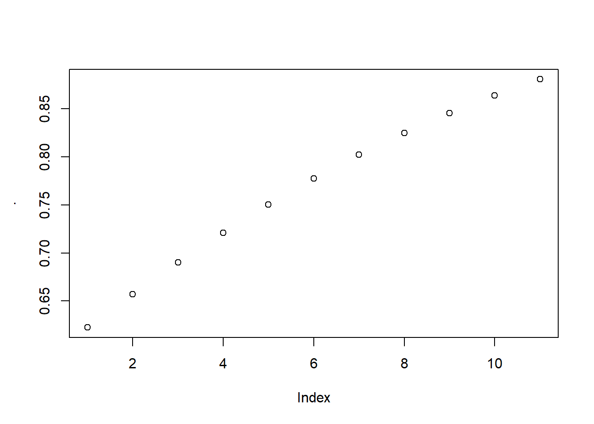
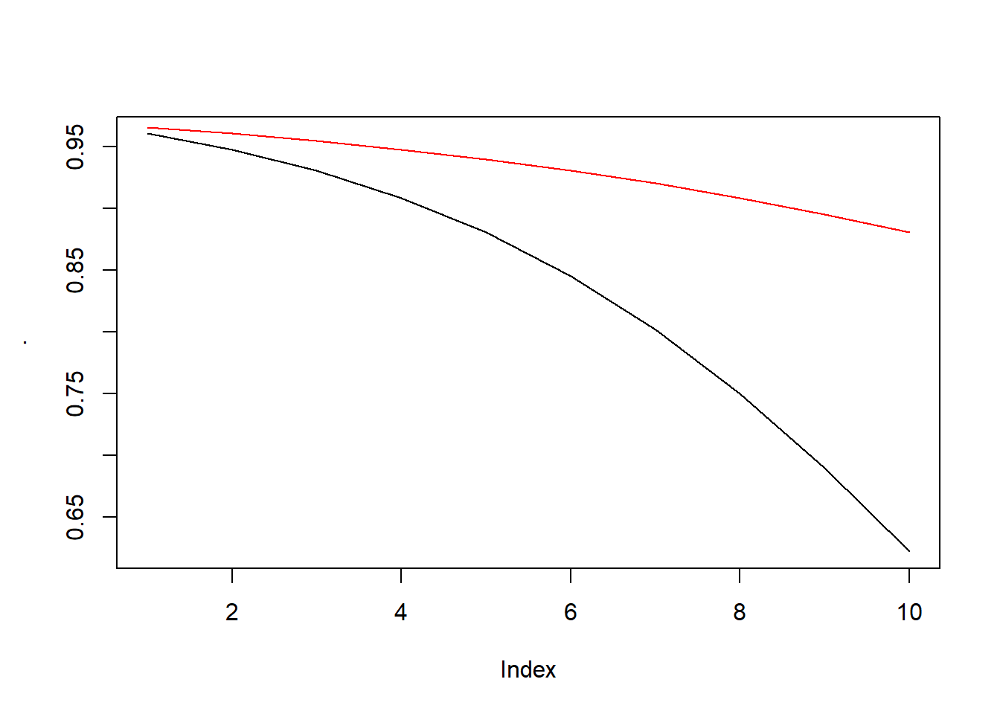

logit <- function(x) log(x/(1-x))
expit <- function(x) 1/(1+exp(-x))
coef_intercept <- 3.5
coef_a <- -0.3
coef_b <- 0.15
expit(coef_intercept + coef_a*(10) + coef_b*(0:10)) %>% plot # endpoint survival prob by accumulated exposure
expit(coef_intercept + coef_a*(1:10) + coef_b*(0)) %>% plot(type = "l") # survival curve with 0 exposure
expit(coef_intercept + coef_a*(1:10) + coef_b*(1:10)) %>% lines(col = "red") # survival curve with full exposure
dt_tmle <- readRDS(paste0(here(),"/data/dt_tmle_202108.rds"))
set.seed(200)
dt_tmle <- dt_tmle[sample(nrow(dt_tmle), 100000, T), ]
for (i in 1:10) {
dt_tmle[, paste0("A1_", i) := sample(0:1, nrow(dt_tmle), replace = T)]
}
# add more "treated" subjects to make positivity issue less severe for now
dt_tmle <- dt_tmle[c(sample(which((dt_tmle[, paste0("A1_", 1:10)] %>% rowSums) == 10), 10000, T),
sample(which((dt_tmle[, paste0("A1_", 1:10)] %>% rowSums) == 9), 10000, T),
sample(which((dt_tmle[, paste0("A1_", 1:10)] %>% rowSums) == 8), 10000, T),
sample(which((dt_tmle[, paste0("A1_", 1:10)] %>% rowSums) == 7), 10000, T),
sample(which((dt_tmle[, paste0("A1_", 1:10)] %>% rowSums) == 6), 10000, T),
sample(which((dt_tmle[, paste0("A1_", 1:10)] %>% rowSums) == 5), 10000, T),
sample(which((dt_tmle[, paste0("A1_", 1:10)] %>% rowSums) == 4), 10000, T),
sample(which((dt_tmle[, paste0("A1_", 1:10)] %>% rowSums) == 3), 10000, T),
sample(which((dt_tmle[, paste0("A1_", 1:10)] %>% rowSums) == 2), 10000, T),
sample(which((dt_tmle[, paste0("A1_", 1:10)] %>% rowSums) == 1), 10000, T),
sample(which((dt_tmle[, paste0("A1_", 1:10)] %>% rowSums) == 0), 10000, T),
sample(nrow(dt_tmle), 10000, T)), ]
K <- 10
node_names <- c("age", "sex", "L_0",
"first_date_2nd_line",
expand.grid(c("L", "Y", "A1", "C"), as.character(1:(K+1))) %>% apply(1, function(row) paste0(row, collapse = "_"))
)
node_names <- node_names[!node_names %in% c(paste0(c("C_", "A1_"), K+1))]
# create random L_0
dt_tmle[, "L_0" := sample(0:1, nrow(dt_tmle), replace = T)]
dt_use <- dt_tmle[, ..node_names]
# max.date <- max(dt_use$first_date_2nd_line)
max.date <- as.Date("2016-12-31") # the last day of possible follow-up
# ltmle use 1 as event
for (x in grep("Y_", node_names)) dt_use[, (node_names[x]) := 1 - get(node_names[x])]
# noninformative censoring with 0.05 prob; but will be coded back into the fake index date, so there is no need to fit C models
set.seed(123)
# censoring is the within interval change
prob_censoring <- 0.05
dt_use[, C_1 := rbinom(nrow(dt_use), 1, 1-prob_censoring)]
for (i in 2:10) {
risk_set <- dt_use[[paste0("C_", i-1)]] == 1
temp_input <- sapply(rep(1-prob_censoring, sum(risk_set)), function(each_p) rbinom(1, 1, each_p))
dt_use[risk_set, ':=' (paste0("C_", i), temp_input)]
dt_use[!risk_set, ':=' (paste0("C_", i), 0)]
}
# regenerate outcomes according to target distribution
# Yt is the start of interval status; always start with event-free
# dt_use[, Y_1 := 1-rbinom(nrow(dt_use), 1, expit(3))]
dt_use[, Y_1 := 0]
for (i in 2:11) {
risk_set <- !is.na(dt_use[[paste0("Y_", i-1)]]) & dt_use[[paste0("Y_", i-1)]] == 0 & dt_use[[paste0("C_", i-1)]] == 1
if (i==2) prev_accumulated_time <- rep(0, nrow(dt_use)) else prev_accumulated_time <- dt_use[, paste0("A1_", 1:(i-2)), with=F] %>% rowSums
accumulated_time <- dt_use[, paste0("A1_", 1:(i-1)), with=F] %>% rowSums
if (i > 2) {
prob_ratio <- expit(coef_intercept + coef_a*(i-1) + coef_b*accumulated_time)/expit(coef_intercept + coef_a*(i-2) + coef_b*prev_accumulated_time)
# /(1-prob_censoring)
} else {
prob_ratio <- expit(coef_intercept + coef_a*(i-1) + coef_b*accumulated_time)
# /(1-prob_censoring)
}
prob_ratio <- ifelse(prob_ratio <=1, prob_ratio, 1)
prob_ratio <- ifelse(prob_ratio >=0, prob_ratio, 0)
temp_input <- sapply(
# rep(0.95, sum(risk_set))
# (1 - 0.03*accumulated_time)[which(risk_set)]
prob_ratio[which(risk_set)]
, function(each_p) rbinom(1, 1, each_p))
dt_use[risk_set, ':=' (paste0("Y_", i), 1-temp_input)]
dt_use[!risk_set, ':=' (paste0("Y_", i), ifelse(dt_use[!risk_set, paste0("Y_", i-1), with=F] == 1, 1, NA))]
}
# code censoring into a regenerated index date
# first time bin t where censoring status changes
censored_t <- dt_use[, paste0("C_", 1:10)] %>% apply(1, function(eachRow) first(which(eachRow == 0))) %>% lapply(function(x) ifelse(length(x) == 0, 0, x)) %>% unlist
censored_t[censored_t==0] <- 11
fake_index_dates <- max.date - (censored_t - 1) * (365.25/2) - sample(10:170, nrow(dt_use), T)
# check fake index date inferred Ct process matches observed censoring
temp <- floor((max.date - fake_index_dates) / (365.25/2)) + 1 # decide max.date is in which interval, then it means censoring status changes within this interval
table(temp)## temp
## 1 2 3 4 5 6 7 8 9 10
## 6039 5643 5538 5199 4777 4603 4462 4133 3792 3739censored_t %>% table## .
## 1 2 3 4 5 6 7 8 9 10
## 6039 5643 5538 5199 4777 4603 4462 4133 3792 3739dt_use[, first_date_2nd_line := fake_index_dates]
# keep it as NP truth for different sample sizes
dt_use_backup <- dt_use %>% copy
#save data
saveRDS(dt_use, file = paste0(here(),"/data/dt_msm.rds"))